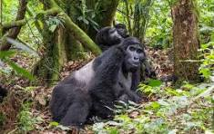
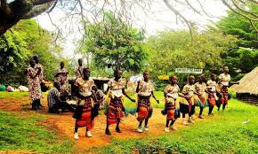

About Uganda Tourism
Wildlife Tourism
Uganda is a beautiful East African country known as "The Pearl of Africa." It is famous for its diverse wildlife, stunning landscapes, rich cultural heritage, and warm hospitality. Tourism is one of the country's most important economic sectors, attracting visitors from around the world. Wildlife Tourism Uganda is home to more than 10 national parks and several wildlife reserves. Visitors can enjoy game drives, bird watching, nature walks, and gorilla trekking. The country is especially famous for the endangered mountain gorillas found in Bwindi Impenetrable National Park. Other popular parks include Queen Elizabeth National Park, Murchison Falls National Park, and Kidepo Valley National Park. Uganda offers unforgettable wildlife experiences including gorilla trekking and game drives.

Cultural Tourism
Cultural Tourism Uganda has over 50 ethnic groups, each with unique traditions, languages, music, dance, and cuisine. Tourists can visit cultural sites, attend traditional ceremonies, and learn about the country's rich history. Cultural tourism helps preserve local traditions while providing income for communities.Visitors experience traditional dances, food and customs from different tribes.

Adventure Tourism
Uganda offers exciting adventure activities for visitors. These include white-water rafting and bungee jumping at the Source of the Nile, mountain climbing in the Rwenzori Mountains, hiking, canoeing, and zip-lining. Adventure tourism attracts travelers seeking unique outdoor experiences.Activities include rafting, hiking and mountain climbing.
Tourism Timeline
- 1952 - Queen Elizabeth National Park established.
- 1991 - Bwindi Impenetrable Forest declared a National Park.
- 1994 - Gorilla tourism expands.
- 2025 - Uganda remains a leading African tourism destination.
Sources
Uganda Wildlife Authority (UWA). "History of Uganda's National Parks."
UNESCO World Heritage Centre. "Bwindi Impenetrable National Park."
Uganda Tourism Board (UTB). "Explore Uganda Tourism Information."